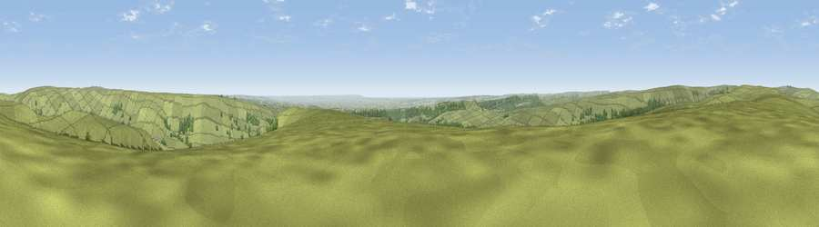

Viewpoint c9909_9299
#6932 in England · top 20% of its area beats it · —The view, rendered

A 360° render of this exact spot computed from the terrain model, tree cover and land cover — summer colours, afternoon light, calibrated against photographs of famous viewpoints. Real trees, hedges and buildings will differ in detail.
The panorama
Grey silhouette: terrain skyline in each direction (720 bearings, Earth curvature and refraction included). Dashed green: skyline with trees (+15 m) and buildings (+8 m) as obstacles. Blue strip: how far the ground is visible on each bearing.
Where the view opens
Wedge length = distance to the farthest visible ground on that bearing (vegetation-aware). Rings at 10, 25 and 50 km.
What fills the view
84% grassland · 9% woodland · 6% cropland
Angular shares of the visible panorama (visual magnitude), not map area. Landscape diversity 0.24 (0–1 Shannon).
Key numbers
More beautiful places nearby
The staircase of upgrades: each row has a higher view potential than everything closer. Driving times are estimates from straight-line distance, calibrated against real road routing — check an actual route before setting out.
| Place | Direction | Drive | Score |
|---|---|---|---|
| Viewpoint near Gillamoor | SSE · 5 km | ~10 min | 72.8 |
| Viewpoint near Ingleby Greenhow | NNW · 9 km | ~18 min | 75.6 |
| Viewpoint near Ingleby Greenhow | NNW · 11 km | ~20 min | 76.0 |
| White Hill | NW · 12 km | ~22 min | 84.2 |
| Viewpoint near Great Broughton | NW · 12 km | ~22 min | 84.4 |
| Viewpoint near Kirkby | NW · 14 km | ~25 min | 84.9 |
| Carlton Bank | WNW · 15 km | ~27 min | 85.1 |
| Roseberry Topping | NNW · 19 km | ~32 min | 85.8 |
54.35068, -1.00186 · source: screening · position refined by local search. Computed location — check access rights before visiting.